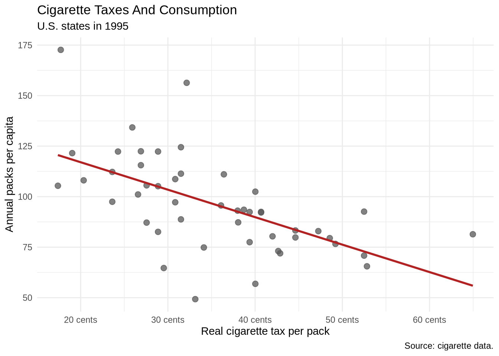

library(tidyverse)
library(plotly)
library(scales)
library(DT)
cigarettes <- read_csv(
"Data/cigarettes/cigarette.csv",
show_col_types = FALSE
) |>
select(-any_of("rownames")) |>
rename(
packpc = any_of("packs"),
avgprs = any_of("price"),
pop = any_of("population")
) |>
mutate(
year_date = make_date(year),
real_tax = tax / cpi,
real_price = avgprs / cpi,
income_per_capita = income / pop
)10 Interactivity And Dashboards
10.1 Learning Goals
By the end of this chapter, the main goals are:
- convert a static
ggplot2figure to an interactive HTML figure withggplotly() - control hover text so interactive output shows useful information
- build a simple animated plot with a time slider
- recognize when a dashboard is a good output format
- understand the basic structure of a Quarto dashboard file
10.2 Where This Fits
The earlier chapters focused on data import, data wrangling, static plots, labels, scales, annotations, and complete figure revision. This chapter keeps those skills in place and changes the output form.
Interactivity is most useful when readers need to inspect details, zoom into dense areas, or compare individual cases. A dashboard is most useful when several related outputs belong together.
The underlying workflow is still the same:
- load the data
- inspect the variables
- wrangle the data into the shape needed for the plot
- build a clear static version
- add interactivity or package the output only after the basic figure works
10.3 Setup
This chapter uses the local cigarette data copied into the 2026 course project.
10.4 From Static To Interactive
The easiest route into interactivity is to begin with a normal ggplot2 plot. The plot below uses the final year in the cigarette data and compares state cigarette taxes with annual packs per capita.
cigarettes_1995 <- cigarettes |>
filter(year == max(year))
tax_plot <- ggplot(
cigarettes_1995,
aes(x = real_tax, y = packpc)
) +
geom_point(color = "gray35", alpha = 0.75, size = 2.4) +
geom_smooth(method = "lm", formula = y ~ x, se = FALSE, color = "firebrick") +
scale_x_continuous(labels = label_number(suffix = " cents")) +
labs(
title = "Cigarette Taxes And Consumption",
subtitle = "U.S. states in 1995",
x = "Real cigarette tax per pack",
y = "Annual packs per capita",
caption = "Source: cigarette data."
) +
theme_minimal()
tax_plot
The static plot should come first because it is easier to check. The next step wraps the completed plot in ggplotly().
ggplotly(tax_plot)That one call adds hover, zoom, and pan behavior in HTML output.
10.5 HTML Widgets And Output Formats
ggplotly() creates an HTML widget. HTML widgets are R objects that rely on JavaScript in the rendered page. This same general idea applies to plotly, highcharter, DT, leaflet, and many dashboard components.
That output-format detail matters. HTML widgets are interactive in HTML documents, websites, slides, and dashboards. They are not interactive in PDF output because PDF is a static document format. This chapter is therefore mainly about HTML output.
10.6 Custom Hover Text
The default hover text is often too mechanical. It usually reports mapped variables, but it may not show the case name or format numbers cleanly.
Add a text aesthetic when building the plot. Then tell ggplotly() to use only that text for the tooltip.
cigarettes_1995_hover <- cigarettes_1995 |>
mutate(
hover_text = paste0(
state,
"<br>Real tax: ", number(real_tax, accuracy = 0.1), " cents",
"<br>Packs per capita: ", number(packpc, accuracy = 0.1),
"<br>Real price: ", number(real_price, accuracy = 0.1), " cents"
)
)
tax_hover_plot <- ggplot(
cigarettes_1995_hover,
aes(x = real_tax, y = packpc, text = hover_text)
) +
geom_point(color = "steelblue", alpha = 0.8, size = 2.5) +
geom_smooth(method = "lm", formula = y ~ x, se = FALSE, color = "firebrick") +
scale_x_continuous(labels = label_number(suffix = " cents")) +
labs(
title = "Cigarette Taxes And Consumption",
subtitle = "Hover to inspect each state",
x = "Real cigarette tax per pack",
y = "Annual packs per capita"
) +
theme_minimal()
ggplotly(tax_hover_plot, tooltip = "text")The text = hover_text part is a special bridge between ggplot2 and plotly. A normal static ggplot2 figure does not draw the text aesthetic on the plot. After conversion, ggplotly(tax_hover_plot, tooltip = "text") tells plotly to use that text as the hover label.
The <br> tags create line breaks inside the HTML tooltip. This is one place where HTML syntax appears inside R code because the output is an HTML widget.
10.7 Interactive Time Series
Interactivity is also useful for line charts. Hover text can identify the state, year, and exact value without putting every label directly on the static figure.
focus_states <- c("CA", "KY", "NY", "TX", "VA")
focus_trends <- cigarettes |>
filter(state %in% focus_states) |>
mutate(
hover_text = paste0(
state,
"<br>Year: ", year,
"<br>Packs per capita: ", number(packpc, accuracy = 0.1),
"<br>Real tax: ", number(real_tax, accuracy = 0.1), " cents"
)
)
trend_plot <- ggplot(
focus_trends,
aes(x = year, y = packpc, color = state, group = state, text = hover_text)
) +
geom_line(linewidth = 0.9) +
geom_point(size = 1.7) +
scale_x_continuous(breaks = seq(1985, 1995, by = 2)) +
labs(
title = "Per-Capita Cigarette Consumption Over Time",
subtitle = "Five selected states",
x = NULL,
y = "Annual packs per capita",
color = "State"
) +
theme_minimal()
ggplotly(trend_plot, tooltip = "text")The group = state mapping tells ggplot2 and plotly which observations belong to the same line. This matters because the hover text is different for every row. Without an explicit group, the conversion to plotly can treat points as separate observations rather than connecting them into one line per state.
10.8 Linked Highlighting
plotly can also dim unselected lines when the pointer moves across a figure. The highlight_key() function attaches an interactive key to the data. Here the key is the state abbreviation.
trend_key <- highlight_key(focus_trends, ~state)
highlight_plot <- ggplot(
trend_key,
aes(x = year, y = packpc, color = state, group = state)
) +
geom_line(linewidth = 1) +
geom_point(aes(text = hover_text), size = 1.7) +
scale_x_continuous(breaks = seq(1985, 1995, by = 2)) +
labs(
title = "Hover Highlighting By State",
x = NULL,
y = "Annual packs per capita",
color = "State"
) +
theme_minimal()
ggplotly(highlight_plot, tooltip = "text") |>
highlight(
on = "plotly_hover",
dynamic = TRUE,
opacityDim = 0.18,
selected = attrs_selected(line = list(width = 4))
)The key tells plotly which rows should be treated as the same interactive object. Here all rows for California share the key CA, all rows for Kentucky share the key KY, and so on. That lets the whole state line respond together.
The highlight() call controls the interaction. on = "plotly_hover" means the highlighting happens when the pointer moves over a line or point. dynamic = TRUE lets the highlighted object change as the pointer moves. opacityDim = 0.18 fades the non-highlighted lines. attrs_selected() controls the appearance of the selected line.
This is useful when a line chart contains several series. It is less useful when a plot is already simple enough to read without interaction.
10.9 Animated Plots With Sliders
Some interactive plots add a time slider. A slider is useful when the same relationship changes across many time points and showing every year at once would be too crowded.
The example below uses the local gapminder data. The plot compares GDP per capita and life expectancy, then lets the year change through the slider. The frame = year argument tells plotly which variable should define the animation frames.
gapminder <- read_csv("Data/gapminder/gapminder.csv", show_col_types = FALSE)
plot_ly(
data = gapminder,
x = ~gdpPercap,
y = ~lifeExp,
color = ~continent,
frame = ~year,
type = "scatter",
mode = "markers"
) |>
layout(
title = "Life Expectancy And GDP Per Capita Over Time",
xaxis = list(type = "log", title = "GDP per capita"),
yaxis = list(title = "Life expectancy")
)This example uses plot_ly() directly rather than converting a ggplot2 object with ggplotly(). Direct plot_ly() syntax is sometimes useful when the interactive behavior is the main point, especially for animation.
10.10 Toolbar Control
By default, plotly shows a toolbar when the pointer enters the figure. config(displayModeBar = FALSE) hides it entirely, which produces a cleaner embed in a report. Set it to TRUE to keep the toolbar always visible when zoom or download buttons are useful.
ggplotly(tax_hover_plot, tooltip = "text") |>
config(displayModeBar = FALSE)Plotly’s layout() function exposes many more options — tooltip styling, margins, legend placement, axis formatting — but most of that work is better done in ggplot2 before the conversion, where the tools are more familiar.
config() is different from layout(). layout() changes the plot’s visual structure, such as axes and titles. config() changes widget behavior, such as whether the toolbar appears.
10.11 Highcharter
highcharter is an R interface to the Highcharts JavaScript library. It is another route to interactive HTML figures. The syntax is different from ggplot2: instead of building a static plot and converting it with ggplotly(), highcharter builds the interactive widget directly.
The examples in this section use local or built-in data. They render as interactive widgets in HTML.
penguins <- read_csv("Data/penguins/penguins.csv", show_col_types = FALSE) |>
filter(!is.na(flipper_length_mm), !is.na(bill_length_mm), !is.na(species))
highcharter::hchart(
penguins,
"scatter",
highcharter::hcaes(
x = flipper_length_mm,
y = bill_length_mm,
group = species
)
) |>
highcharter::hc_title(text = "Penguin Bill Length And Flipper Length") |>
highcharter::hc_xAxis(title = list(text = "Flipper length")) |>
highcharter::hc_yAxis(title = list(text = "Bill length"))This example restores a second path into interactive scatterplots. It also reinforces a broader pattern: interactive charts still need clear variables, readable labels, and data cleaning before the widget is created.
10.12 Highcharter Line Charts
Line charts are a natural place to use interactivity because hover text can identify the exact date and value without crowding the static figure.
economics_long2 <- economics_long |>
filter(variable %in% c("pop", "uempmed", "unemploy"))
highcharter::hchart(
economics_long2,
"line",
highcharter::hcaes(x = date, y = value01, group = variable)
) |>
highcharter::hc_title(text = "Selected U.S. Economic Indicators") |>
highcharter::hc_xAxis(title = list(text = "Date")) |>
highcharter::hc_yAxis(title = list(text = "Indexed value")) |>
highcharter::hc_tooltip(valueDecimals = 2)10.13 Highcharter Range Selector
Some Highcharts outputs include interface controls that go beyond ordinary hover text. A range selector lets the reader zoom to common time windows.
highcharter::hchart(
economics,
"line",
highcharter::hcaes(x = date, y = uempmed)
) |>
highcharter::hc_title(
text = "Median Duration Of Unemployment Over Time"
) |>
highcharter::hc_xAxis(type = "datetime", title = list(text = "Date")) |>
highcharter::hc_yAxis(title = list(text = "Median duration in weeks")) |>
highcharter::hc_rangeSelector(
enabled = TRUE,
buttons = list(
list(type = "year", count = 1, text = "1y"),
list(type = "year", count = 5, text = "5y"),
list(type = "year", count = 10, text = "10y"),
list(type = "all", text = "All")
),
inputEnabled = TRUE
)The range selector is a good example of why HTML output can matter. The same underlying data becomes an exploratory widget in HTML.
10.14 Highcharter Column Chart
Interactive bar and column charts are useful when exact values should appear on hover but do not need to be printed on every bar.
economics_decade <- economics |>
mutate(decade = floor(year(date) / 10) * 10) |>
group_by(decade) |>
summarize(avg_psavert = mean(psavert, na.rm = TRUE))
highcharter::hchart(
economics_decade,
"column",
highcharter::hcaes(x = decade, y = avg_psavert)
) |>
highcharter::hc_title(text = "Average Personal Savings Rate By Decade") |>
highcharter::hc_xAxis(title = list(text = "Decade")) |>
highcharter::hc_yAxis(title = list(text = "Average savings rate")) |>
highcharter::hc_tooltip(
pointFormat = "Decade: {point.x}<br>Average savings rate: {point.y:.1f}%"
)10.15 Highcharter Heatmap
Heatmaps are another common interactive form. The hover text can show the exact value inside each cell.
diamonds_heatmap <- diamonds |>
group_by(cut, clarity) |>
summarize(median_price = median(price))
highcharter::hchart(
diamonds_heatmap,
"heatmap",
highcharter::hcaes(x = cut, y = clarity, value = median_price),
name = "Median price"
) |>
highcharter::hc_title(text = "Median Diamond Price By Cut And Clarity") |>
highcharter::hc_tooltip(
pointFormat = "Cut: {point.x}<br>Clarity: {point.y}<br>Median price: ${point.value:.0f}"
)The practical choice is not plotly versus highcharter in the abstract. The choice is which tool produces the clearest result for a specific data task and output format.
10.16 Interactive Tables With DT
Interactivity is not limited to charts. Sometimes the best interactive object is a table that can be searched, sorted, and filtered. The datatable() function from the DT package creates an HTML table widget.
This is useful when individual cases matter. A static plot can show the pattern, while a table can preserve the lookup details.
cigarette_table <- cigarettes_1995 |>
transmute(
state,
tax_cents = round(real_tax, 1),
price_cents = round(real_price, 1),
packs_per_capita = round(packpc, 1),
income_per_capita = dollar(round(income_per_capita, 0))
) |>
arrange(desc(tax_cents))
datatable(
cigarette_table,
rownames = FALSE,
filter = "top",
options = list(
pageLength = 10,
autoWidth = TRUE
)
)The search box and column filters make the table useful as a small lookup tool. The same object can also be embedded inside a dashboard card.
10.17 Interactivity Checklist
Interactivity is useful when it adds a specific capability:
- hover reveals case-level details that should not be printed on the static plot
- zooming helps inspect a dense region
- clicking or highlighting helps compare many series
- search and sorting help readers find individual rows
- a dashboard keeps related plots, tables, and summary quantities together
Interactivity is less useful when it only makes a simple chart more elaborate. If the static chart already communicates the main point clearly, interaction may add novelty rather than information.
10.18 Dashboards As Output
A dashboard is a layout for several related outputs. It is not a substitute for choosing good measures or building readable plots.
A useful dashboard usually contains a small set of components:
- one or two headline quantities
- one main relationship or trend
- one supporting distribution or ranking
- one table or lookup view when individual cases matter
The course includes a standalone dashboard demo for this chapter. Demos/babynames-dashboard-demo.qmd uses U.S. Social Security name data from 1880 to 2017. It includes overview cards, a trend chart for selected names, a top-15 ranking for the most recent year, a sex-split trend for a single name, and an all-time table.
The dashboard format is set in the YAML header:
---
title: "Dashboard Demo"
format:
dashboard:
orientation: columns
---Inside the file, headings create sections, columns, and cards. The plots and tables are ordinary R code chunks. The source files contain comments explaining the data preparation and plotting choices.
Dashboard files can also use value boxes or cards for headline quantities. A minimal example looks like this:
```{.r}
valueBox(
value = "48",
title = "States in the data",
icon = "map"
)
```The surrounding dashboard layout determines where that card appears. The R code inside the card still follows the same rule as the rest of the course: calculate the quantity first, then display it clearly.
10.19 Exercise
Take one static plot from an earlier chapter and make it interactive.
- Save the static plot as a named object.
- Add a
textaesthetic with at least three lines of hover text. - Convert the plot with
ggplotly(plot_name, tooltip = "text"). - Decide whether the interactive version adds useful detail or only adds novelty.
10.20 Closing
Interactivity and dashboards work best after the static figure is already understandable. The durable sequence is to build the plot, check the plot, then choose whether interaction or dashboard packaging helps the audience use it.